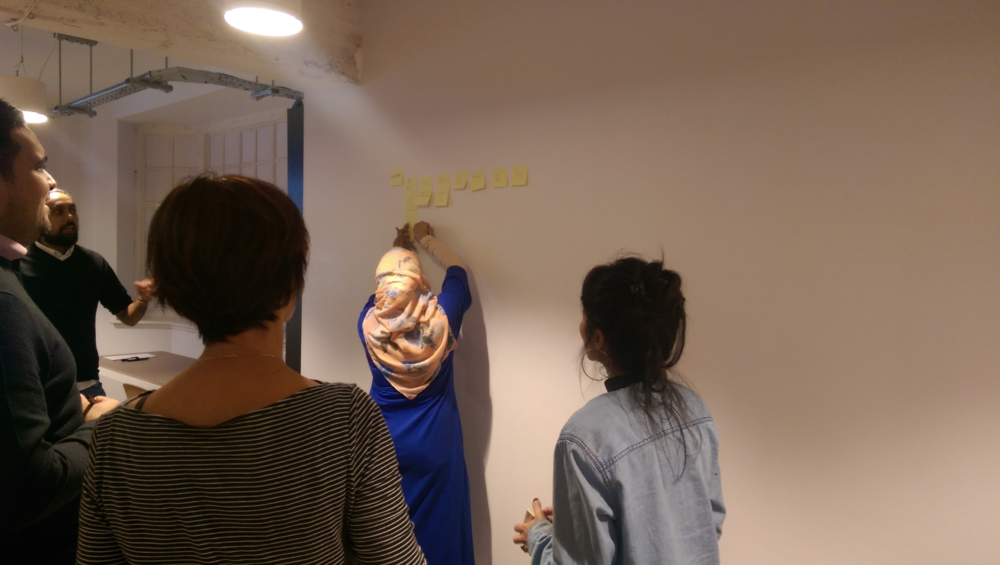
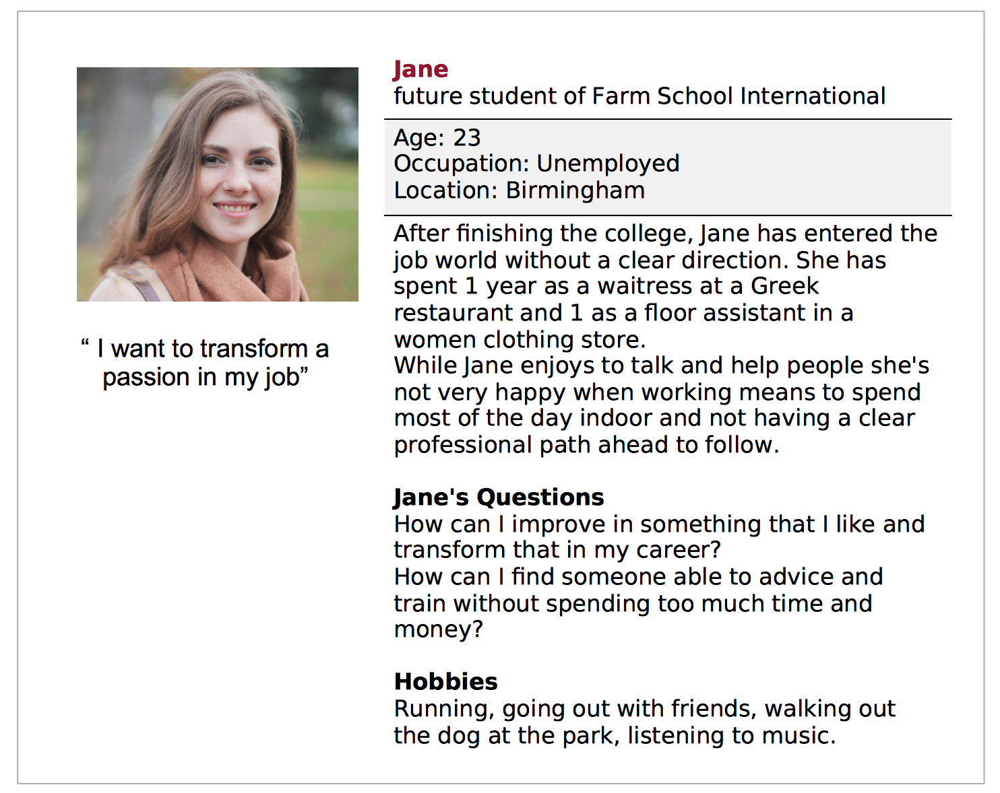
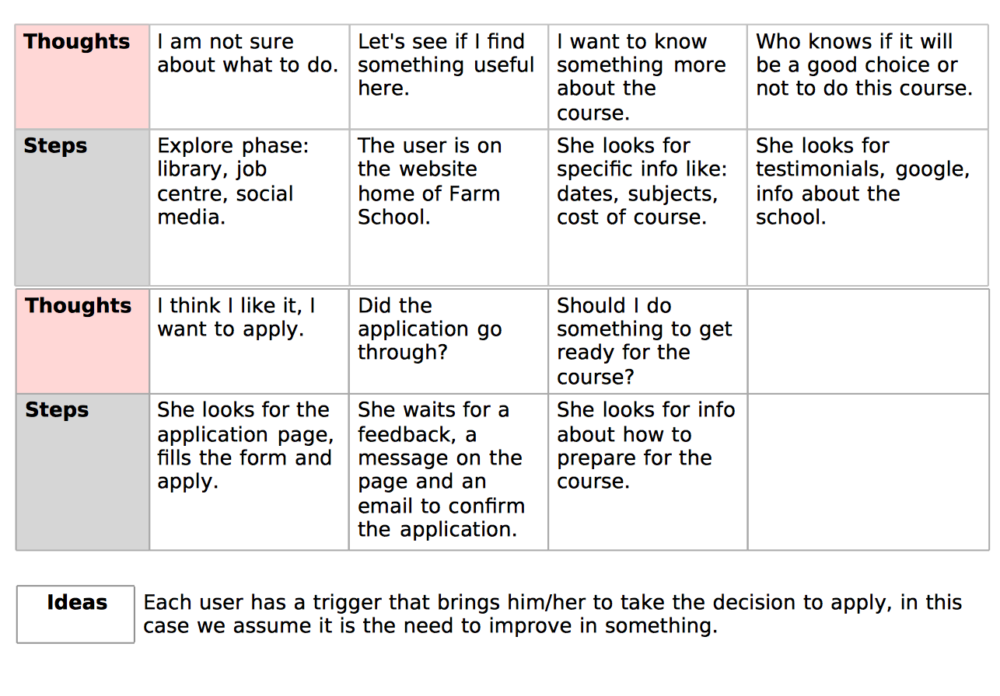
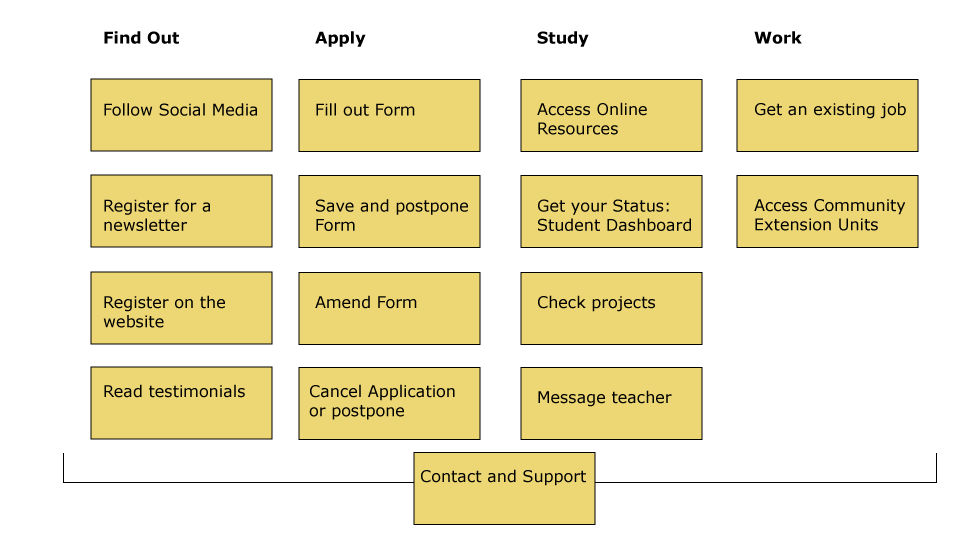
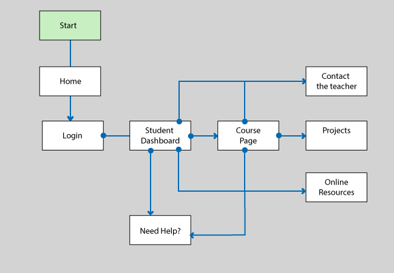

A charity case study for a course project
A redesign of Farm School International's existing website.
Farm School International is a Social Enterprise founded at the beginning of 2018 in Birmingham. Their website is a little bit confusing, the homepage is structured with lots of information, not giving the best user experience to neither of the 3 user target groups: Unemployed Adults, Clients and Partners.
Tools | XD, Illustrator, Photoshop
Farm School International is a Social Enterprise founded at the beginning of 2018 in Birmingham. Their website is a little bit confusing, the homepage is structured with lots of information, not giving the best user experience to neither of the 3 user target groups: Unemployed Adults, Clients and Partners.
More...
Tools | XD, Illustrator, Photoshop
PROCESS
Persona development
We have considered 4 aspects to define a persona for each of the 3 target groups:
- Knowledge (how they get to know about the website)
- Context (where they use it)
- Problems (which problems they have, what they need)
- Motivation (inner motivations that drive them to use The Farm School website)
- Knowledge (how they get to know about the website)
- Context (where they use it)
- Problems (which problems they have, what they need)
- Motivation (inner motivations that drive them to use The Farm School website)
Activity Group to define a persona and a customer journey for the 1° Target Group: Young Adult Unemployed.

Details...
After the Activity I have developed a Persona profile for the user Unemployed Adult.

Customer Journey
Goal: Successful application

Same process has been followed to define the other two users groups: clients and partners.
We have decided to focus on the user Unemployed Adult because he is the main target of the design of Farm School International website.
We have decided to focus on the user Unemployed Adult because he is the main target of the design of Farm School International website.
User Flow
In a Task activity group to better define a User Flow, we have considered all the possible tasks the student wants to accomplish when he interacts with the websites.
First of all we have divided the Tasks in different time phases: Find out - Apply - Study - Work

First of all we have divided the Tasks in different time phases: Find out - Apply - Study - Work
I have focused on the Student enrolled to the course, in the time phase Study. This is the User Flow.



{kind=link}